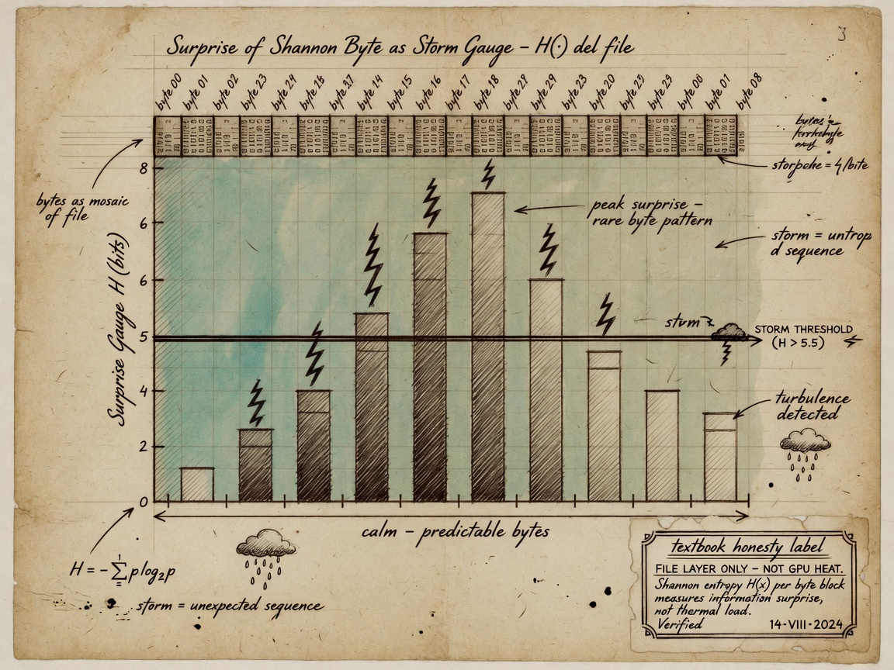
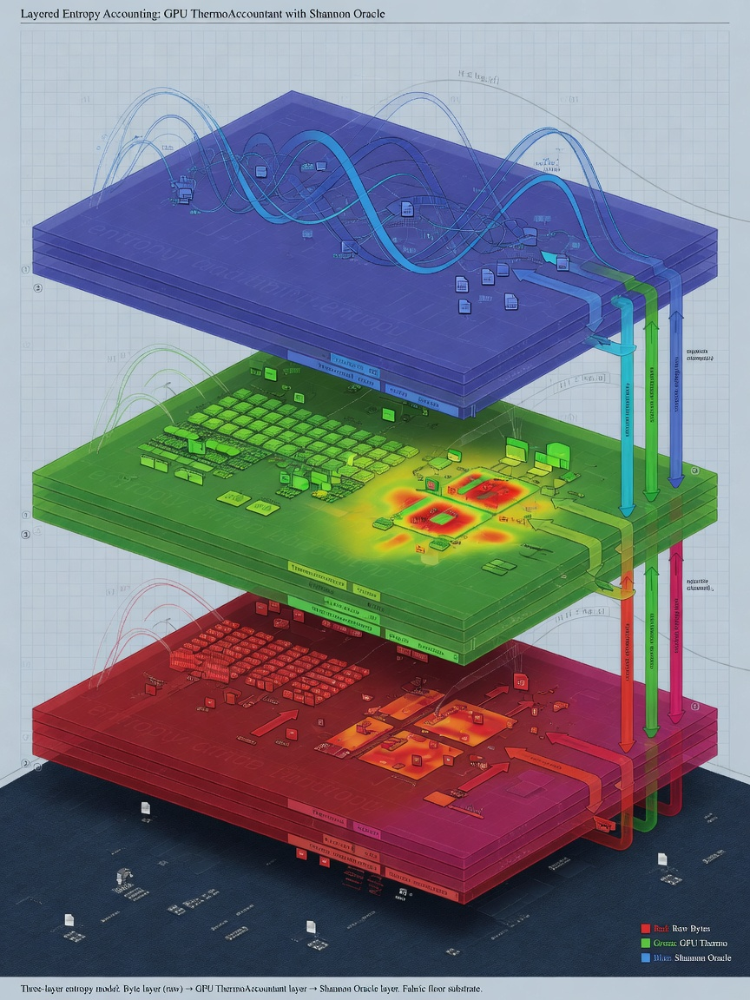
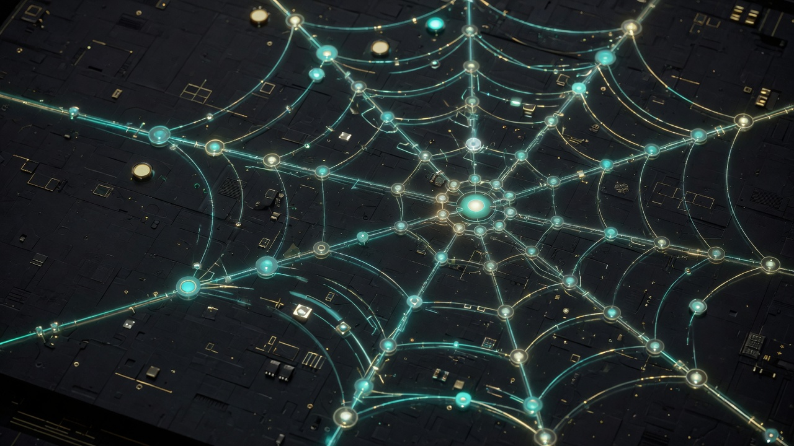

Chapter 13 · Creditor deep dive · Thermodynamic receipts
On the way — what you will learn
Landauer taught the floor on erasing information. On the way you will connect E_min = k_B T ln 2 to entropyThisFrame proxy — honoring the creditor without faking wattmeter readings.
On the way — Landauer layer
Bit erasure thermodynamic bound
Proxy integral semantics in-engine
Comparative science across sessions
Rock: not joules from stderr
1. Introduction — why Landauer after the rocks table
Chapter 4 introduced entropy as the receipt that time ran forward. Chapter 12 named the rock that separates poetry from measurement: the value printed as entropyThisFrame inside ThermoAccountant is a proxy integral labeled Metaphor until calorimetry says otherwise. This chapter is the creditor deep dive that explains the theory behind that label without walking it back.
Figure 13.2 — Three plates: GPU proxy, fabric floor, file oracle — never summed. Claim: Landauer floor as proxy language — not wattmeter
Rolf Landauer is not a mascot on our cover art. He is a physicist whose 1961 result linked logical irreversibility to thermodynamic cost. We honor him at ../creditors/landauer.html with portrait and tribute. We honor Clausius and Boltzmann at ../creditors/clausius-boltzmann.html for the entropy concept that precedes bit erasure. Field Technology stands on their math and refuses to pretend their laboratories became our Vulkan bindings.
By the end of this chapter you should articulate Landauer's bound in symbols and plain English, enumerate what ThermoAccountant integrates each dispatch, and explain why comparative proxy curves help operators even when they are not utility bills from the power company.
2. Landauer's bound — E_min = k_B T ln 2
Landauer's theorem: any logically irreversible manipulation of information must be accompanied by entropy increase elsewhere. Erasing one bit at temperature T has a minimum energy cost:
The constant k_B is Boltzmann's constant, approximately 1.380649×10⁻²³ joules per kelvin. The factor ln 2 appears because one bit represents ln 2 nats of uncertainty resolved — the thermodynamic price of forgetting which branch you were on.
At room temperature near 300 K, E_min is on the order of 2.9×10⁻²¹ joules per bit. Individually negligible. Collectively decisive when DRAM refreshes, caches evict, log files rotate, and framebuffers swap at billions of events per second. The bound is a floor in principle, not a direct readout from stderr in AMOURANTHRTX.
Charles Bennett's reversible computing program shows that if you never erase, you can approach zero dissipation in the limit. Real machines erase constantly. Your engine erases when it drops history, when it clamps away distinguishable states, when it commits to one frame over another. ThermoAccountant exists because operators should practice thinking irreversibly while grep remains honest.
3. From Maxwell's demon to the operator keyboard
Maxwell imagined a demon sorting fast and slow molecules at a gate. Szilard placed information-bearing memory in the loop. Landauer priced erasing that memory. The paradoxes teach one discipline: information is physical.
In our stack the demon is not a sprite in CANVAS.comp. The demon is you — choosing injection strength, choosing whether to run maintenance, choosing whether to preserve coherence with the previous frame. Each choice has a thermodynamic story even when the story is logged as proxy, not watts.
This is why Field Technology treats offense and defense as the same literacy applied to different writable surfaces. Dispatch writes the next tick. Logs record that the tick was not free. Chapter 18 will name your conscience at the keyboard; here we name the accountant beside it.
4. ThermoAccountant structure — binding 2
ThermoAccountant is Implemented at Vulkan binding 2. It is populated every dispatch_canvas() and mirrored into data_bus slots 24 through 28 for HUD and grep correlation.
The struct fields are not decorative names. entropyThisFrame is the per-frame proxy integral discussed throughout this chapter. avgBoundaryThermo averages boundary entropy density — where the fabric meets clamps and eventually where rendering meets the operator's eye. prevMaintCost is the coherence tax paid to remember the previous frame responsibly. freeEnergyIncome couples sealed session time with structured input activity. steps counts dispatches — the heartbeat that proves time ran forward in the engine loop.
When stderr prints THERMO lines, treat them as shadows of this struct on the host CPU. When fabric moves but these shadows stay flat, suspect broken telemetry before suspecting physics betrayal.
5. Decomposing entropyThisFrame
Operators should read entropyThisFrame as a sum of interpretable stories rather than a single mystical number:
Field work accumulates from coupled evolution across Phi, Thermo, and Flow when FieldCoupling is non-zero. Diffusion, wave steps, and cross-channel mixing each contribute. Turning FieldCoupling to zero for pedagogy isolates channels; turning it up reveals Maxwell's neighborhood on a grid.
Probe dissipation tracks intentional injection — mouse paths, operator probes, InjectStrength deposits. An idle canvas should show low probe cost. Aggressive injection should raise it. If visuals respond but probe cost does not, fix telemetry before writing papers.
prevMaintCost rises when the engine pays to stay coherent with history — stability is not free. High maintenance with subtle visual change is often legitimate, not automatically a leak bug.
The Landauer proxy term uses k_B T ln 2 as vocabulary tied to activity scales. It is not a claim that the driver counted bit erasures this frame. Temperature in proxy space may reference boundary thermo or body-temperature seeding — read Chapter 12 before quoting numbers externally.
6. avgBoundaryThermo and edge discipline
Boundaries are where fields meet constraints. avgBoundaryThermo summarizes entropy density near those edges. Interpreting it requires comparative habit: rising boundary thermo with calm interior may mean energy exits correctly through edges. Violent interior with flat boundary may mean internal clamps absorb what should have exited.
Do not equate this with GPU junction temperature from nvidia-smi. Package thermals and simulation boundary accounting live in different layers. Both can be true. Conflating them in marketing is how demo culture sells thermodynamic rendering without receipts.
Chapter 17 will speak sacred language about holographic boundaries. This chapter keeps the engineering account: edges cost stories in logs.
7. freeEnergyIncome and sealed time
freeEnergyIncome links sealed session genesis with input activity. TotalTime::seal() in the engine spine locks session start into FieldSocket::sealed_time so frame-rate jitter cannot rewrite physics time. Income metaphors usable drive — not free money, but structured capacity in the fabric budget.
Chapter 19 extends sealed time across hosts with sovereign sync and SQUIDGIE detection. Here, note the sibling relationship: Landauer receipts and time receipts both refuse retroactive myth. You seal forward. You verify at receive. Thermo steps and monotonic clocks should move together in healthy sessions.
8. Entropy floor — second law as code
clearFieldImages() seeds thermo with roughly 0.015 minimum to prevent unphysical reversibility. The second law appears as engineering bias: diffusion injects minimum noise. You cannot undo a frame by wishing.
Figure 13.4 — Entropy floor on fabric channel — second law as engineering guard. Claim: FieldCoupling moves energy between fabric channels
Students ask why bias noise instead of pure reversible simulation. Because operators live in dissipative hardware, because panels archive monotonic jsonl, because honesty prefers a labeled floor to silent zero entropy while texels clearly moved.
9. Lab versus log — the rock restated
Rock: proxy integrals are comparative receipts, not utility bills.
If entropy reads zero while fabric texels move, dispatch failed or telemetry broke. Physics refuses to lie for you. If entropy spikes while idle, investigate maintenance bleed, stuck probes, or runaway coupling — still a signal, still not joules from the wall meter.
Modern GPU calorimetry is hard: fast switching, distributed heat, driver opacity. We do not claim stderr equals junction watts. We claim comparative curves help experts form hypotheses when lab gear arrives — hypothesis, not verdict.
10. Comparative practice without watt meters
Expert operators compare sessions, not absolutes:
Did steps increment? If not, dispatch did not run — CI signal even headless. Did injection raise probe dissipation relative to idle? If not, injection path may be broken. Does raising FieldCoupling raise field work? If not, coupling knob path may be disconnected. Does prevMaintCost dominate while visuals freeze? Maintenance may be buying stability. Does avgBoundaryThermo trend with clamp changes? Boundary story may be healthy.
None of these questions require believing proxies are SI joules. All require believing the engine should tell a consistent story when time runs forward.
11. Shannon oracle separation
Chapter 14 treats Shannon entropy H on files in NEXUS. ThermoAccountant lives in the GPU dispatch loop. Same word entropy, different layers. Vendors fuse them into one dashboard; Field Technology refuses.
Landauer prices bit erasure thermodynamically. Shannon measures surprise in symbol distributions. Boltzmann links microstates to macro entropy. Keep creditors named and separated. Read ../creditors/shannon.html when file storms rise; read this chapter when frame receipts matter.
12. Historical weight — 1961 in a 2026 textbook
Landauer worked when computers filled rooms. His bound survived vacuum tubes, CMOS, GPUs, and will survive whatever compute substrate follows. As devices approach atomic limits, per-bit thermodynamics becomes engineering constraint rather than philosophy footnote.
AMOURANTHRTX is not a laboratory Landauer engine. It is operator training: grep irreversibility before someone sells reversible cloud myth. The textbook is serious because it teaches mechanism and labels rocks visible.
Operator drill 13.A — baseline grep
./linux.sh run 2>&1 | tee ch13-run.log
# Classic canvas: idle 30s, inject 60s
grep -E 'THERMO|entropy|Boundary|prevMaint|steps' ch13-run.log | tail -60
Operator drill 13.B — coupling A/B
# Session A: FieldCoupling = 0, 120s
# Session B: FieldCoupling = 1.0, 120s
# Compare entropyThisFrame distributions — field work should rise with coupling
Operator drill 13.C — data_bus mirror
# Correlate HUD / debug read of data_bus[24-28] with stderr THERMO lines
Figure 13.1 — Theory floor, proxy ledger, honest label.
Study questions
State Landauer's bound in symbols and plain English. Why does ln 2 appear?
Enumerate ThermoAccountant fields and their roles.
Why must entropyThisFrame stay labeled Metaphor in public writing?
Fabric moves, entropy zero — what do you check first?
Explain prevMaintCost as coherence tax.
How is avgBoundaryThermo different from GPU junction temperature?
What is the entropy floor defending against?
Name three comparative uses of proxy curves.
How do Landauer receipts relate to sealed time?
Distinguish ThermoAccountant entropy from Shannon file H.
Read ../creditors/landauer.html — what does the love block claim?
When would you escalate from proxy grep to laboratory calorimetry?
13. Bennett and reversible computing — contrast case
Charles Bennett showed that computation can be logically reversible if you never erase information — trading memory for heat avoidance. AMOURANTHRTX is not a reversible computer. It maintains frame history, pays prevMaintCost, injects entropy floor noise, and commits to one dispatched state per tick.
Teaching Bennett beside Landauer clarifies what our proxy is not claiming. We are not selling infinite efficiency. We are training operators to see that commits have stories. When you rotate logs, wipe a texture, or reinitialize guest RAM on the Field Die, you are performing erasures in the engineering sense even when no one prints E_min in joules.
14. data_bus forensic walkthrough
Slot 24 mirrors entropyThisFrame for HUD consumers. Slot 25 carries avgBoundaryThermo. Slots 26–28 complete the accountant picture alongside steps mirrored through THERMO stderr channels. When debugging, read headers in Pipeline.hpp and FieldRtxFieldAbs.hpp before trusting a screenshot of the HUD.
Forensic discipline: capture run.log, capture a fabric screenshot, capture data_bus readout if your debug build exposes it. Three witnesses, one session. If they disagree, telemetry is broken — not physics.
15. Headless CI and steps counter
Headless dispatch still increments steps. CI pipelines that only check exit code miss half the story. A passing build with frozen steps is a silent dispatch failure. Landauer discipline in CI means asserting monotonic steps across golden frames.
Document golden THERMO ranges as comparative bands, not absolute watts. Your lab temperature differs from CI runners; proxy shape should still match within tolerance when shaders match.
16. Writing about thermodynamics in papers
When citing Landauer in academic work, cite Landauer 1961 and Bennett reviews from primary literature. When citing AMOURANTHRTX, cite bindings and label proxy integrals Metaphor in figure captions. Mixing citations without labels is how honest engineers get embarrassed in peer review.
Field Primer exists so your students do not embarrass you: Chapter 12 table is copy-pasteable into lab reports as honesty boilerplate.
17. Failure mode catalog
Zero entropy with moving texels: dispatch or mirror failure. Idle entropy spike: maintenance bleed or stuck probe. Coupling knob ineffective: FieldCoupling not reaching CANVAS.comp path. Boundary flat with violent interior: clamp fighting solver. Each failure maps to grep verbs before opening gdb.
18. Bridge to Shannon and Maxwell
Landauer is the receipt floor. Shannon (Chapter 14) is file surprise. Maxwell (Chapter 15) is spatial coupling that raises field work. The trilogy of creditor chapters 13–15 should be assigned as one two-week module with three grep labs.
Creditor deep-dive workshop — complete once
Chapters 13–15 share one drill set — complete after reading all three creditor chapters.
Primary source: Footnote one Landauer, Shannon, or Maxwell paper (not Wikipedia alone).
Grep proof: One grep command tying this chapter's equation to an Implemented or Metaphor label from Chapter 12.
Layer separation: Write three sentences — GPU proxy, file oracle, theory — never summed into one entropy number.
Comparative run: Two matched sessions; plot entropyThisFrame or file H trend — comparative only, no joule billing.
Operator journal — Landauer and ThermoAccountant
Maintain a paper or markdown operator journal for Landauer and ThermoAccountant. Each drill entry: date, hardware, driver, git hash, three THERMO or jsonl lines, one surprise, one label (Implemented / Metaphor / Philosophy). Journals become your personal creditor — future you inherits coupled state from past you. Bring the journal to Chapter 18 covenant audit drill 18.A as evidence.
Reading companion — Landauer and ThermoAccountant
This reading companion reinforces Landauer and ThermoAccountant for self-study tracks. Week one: read the chapter straight through with Chapter 12 open. Week two: complete all operator drills on hardware you own. Week three: write a one-page creditor tribute response linking ../creditors/ reading to a grep result from your machine. Week four: teach another human one section using the three-tag labeling exercise. Field Technology v5 measures success in reproduced receipts, not in vibes.
Cross-links: Chapter 4 entropy receipts, Chapter 5 packet field, Chapter 8 data bus, Chapter 10 Spiderweb mirror, Chapter 11 observability, Chapters 16–18 sacred covenant. Landauer and ThermoAccountant is not an island — it is a creditor lens on the same stack you already run.
Honesty reminder: AMOURANTHRTX, NEXUS-Shield, Queen, and Field Primer have different licenses. Teaching from this chapter does not automatically license commercial engine use. Point students to product headers and FIELD-TECHNOLOGY-V5.md for edition boundaries.
Chapter closing — Landauer and ThermoAccountant
Chapter 13 closes the creditor loop on irreversibility. You now hold theory (E_min), structure (ThermoAccountant), practice (grep drills), and honesty (Metaphor label) in one hand. In the other hand, hold ../creditors/landauer.html open long enough to read the love block: tenderness toward bits is not softness — it is refusal to erase another operator's clarity in haste. Carry that into Chapter 14 where a different entropy measures file surprise, not frame heat.
Evidence anchor — grep and sources
Major claims in this chapter anchored for reproducibility. Implemented = grep today; Metaphor = intuition; Philosophy = discipline.
Claim
Statement
Label
Evidence
Landauer floor
k_B T ln 2 per bit erased
Metaphor
Theory — GPU uses proxy
ThermoAccountant
Operational receipt
Metaphor
entropyThisFrame integral
Comparative sessions
Δproxy across runs
Implemented
Valid grep science
Wattmeter billing
Package power as Landauer
Metaphor
Explicit rock — forbidden
E_min = k_B T ln 2 | ΔS_proxy between sealed sessions
Landauer floor honored in proxy language — humility without wattmeter fraud. Comparative receipts across sessions remain valid science.
Chapter 14
Shannon Oracle — Storm Thresholds
Chapter 14 · Creditor deep dive · Shannon Oracle
On the way — what you will learn
Shannon measured surprise in symbols. On the way you will compute H = −Σ p_i log₂ p_i on file payloads, tune calm/alert/storm thresholds, and keep the oracle nurse-call separate from gatekeeper gavel.

On the way — Shannon layer
Byte histogram to entropy
Storm polling as daemon duty cycle
High H on zip — corroborate, not auto-KILL
Layer separation from GPU thermo
1. Introduction — storm gauge, not soul reader
Chapter 5 introduced the packet field as defensive perimeter. Chapter 4 separated ThermoAccountant frame entropy from file-layer signals. This chapter is the creditor deep dive for Claude Shannon — the oracle that measures surprise in byte distributions and tunes how hard NEXUS watches without auto-sentencing payloads.
Shannon is honored at ../creditors/shannon.html. His 1948 theory is not morality software. High H means slow down, corroborate, ask the operator. That is pastoral care encoded as engineering discipline — the 94/6 posture applied to bytes.
2. Shannon entropy — H = −Σ p_i log₂ p_i
For discrete symbols with probabilities p_i, Shannon entropy measures expected surprise in bits per symbol. Uniform random bytes approach 8 bits per byte. English text sits lower. Compressed or encrypted payloads push high.
Figure 14.2 — File-layer surprise H: storm gauge, not GPU heat. Claim: Shannon H on files — separate from GPU thermo
The formula uses log base 2 because engineers count bits. The negative sign makes positive surprise a positive number — intuitive for thresholds.
In NEXUS, H is computed on file samples and payload windows. It is Implemented as Entropy Oracle behavior — grep-able, tunable, separate from GPU thermodynamics.
3. Storm thresholds — calm, alert, storm
Daemon polling tiers mirror weather discipline:

Figure 14.4 — Shannon storm gauge never summed with GPU thermo layers.
Calm: baseline cadence when H stays in expected bands for known file types. Alert: increased sampling when H rises above calm ceiling — packed executables, encrypted archives, obfuscated droppers. Storm: aggressive corroboration — more context, more operator attention, still not automatic kill.
Storm is a gauge needle, not a gavel. Field Technology refuses products that treat entropy spikes as verdict without human or multi-signal corroboration.
4. NEXUS layer — where the oracle lives
ThermoAccountant lives in AMOURANTHRTX dispatch_canvas(). Shannon oracle lives in NEXUS-Shield file analysis and related daemon loops. Different products, different bindings, different grep patterns.
Conflating them is how vendors sell one dashboard that lies about both thermodynamics and file surprise. Chapter 12's honesty table exists to stop that fusion.
5. High H — what it does and does not mean
High H may indicate encryption, compression, packing, or genuinely random payloads. It may also appear in benign encrypted backups you created. It does not prove malice. It proves surprise relative to model expectations.
Operators learn to pair H with process path, port habit, gatekeeper history, and sealed time context. Single-metric theology is vendor candy.
6. Low H — complacency risk
Low H is not automatic safety. Polyglot files, structured malware with repetitive shells, and staged droppers can present deceptive distributions early. Calm thresholds should not anesthetize.
Defense is field literacy across packet sentences, file oracle, and fabric observability — not one green LED.
7. 94/6 posture in bytes
Field Technology's 94/6 discipline: most traffic should pass calm observation; the long tail of surprise earns disproportionate attention without choking the perimeter. Shannon thresholds implement that tail detection.
This is operational mercy: do not DDoS your own machine with paranoia polling on every calm byte.
8. Separation from Landauer and fabric entropy
Landauer bounds erasure thermodynamically in theory. ThermoAccountant proxies frame irreversibility on GPU. Shannon measures symbol surprise in files. Entropy floor biases fabric noise. Four related words, four layers. Name them separately in reports.
9. Operator corroboration workflow
When oracle enters alert or storm:
Pause auto-actions. Pull process path and parent chain. Check packet field jsonl for recent socket habits. Compare sealed time receipts if sync enabled. Ask whether file is expected (backup job, dev build). Escalate with labels: Implemented signal, not Philosophy verdict.
Chapter 18 covenant: daemons assist; you inherit conscience.
10. False positives and tuning
Thresholds are tuned discipline, not cosmic constants. Operators document baseline H for their own build artifacts, backup tools, and game engines. Custom calm bands prevent alert fatigue.
Alert fatigue is an attack surface — when everything storms, nothing storms.
11. Relation to DPI and packet field
Deep packet inspection samples flows; file oracle samples artifacts. Spiderweb and packet field (Chapter 5) give network-position context; Shannon gives byte-surprise context. Correlation is strength; fusion into one lying score is weakness.
12. Shannon as creditor pedagogy
Read ../creditors/shannon.html tribute. Communication is care made serial, the love block says. Quantifying surprise is how care scales without pretending to read souls.
Teach newcomers Shannon before they touch storm knobs. Teach Chapter 12 before they quote H to management.
Operator drill 14.A — sample H on known files
# Calm baseline: plain text README
# Alert sample: gzip -9 packed binary
# Storm sample: encrypted archive you control
# Record H bands and daemon tier shifts in field jsonl
Operator drill 14.B — corroboration table
# For one alert event, fill: path, H, process, port habit, operator verdict
# No verdict without two independent signals
ASCII text peaks on printable bytes. UTF-8 text shows multibyte structure but remains far from uniform. gzip and zlib lift high bytes. AES ciphertext approaches flat histograms. Operators build intuition by histogramming their own artifacts before touching production storm knobs.
14. Entropy Oracle implementation posture
NEXUS implements file-layer analysis as Implemented behavior — thresholds in config, jsonl rows on events, panel visibility at :9477. The oracle does not replace packet field gatekeeper; it corroborates. Implementation claims require grep in lib sources, not wiki quotes alone.
15. Storm tier tuning worksheet
Document calm ceiling for: plain source trees, release tarballs, your own encrypted backups, game asset packs. When a new build class appears, update calm bands before alert fatigue trains you to ignore storms. Worksheet belongs in operator runbooks beside firewall rules.
16. Adversarial surprise without malice
Packers raise H. Legitimate packers used by your own release pipeline also raise H. The oracle asks you to slow down, not to moralize bytes. Correlation with signature age, publisher habit, and sealed time context separates pipeline noise from novel noise.
17. jsonl as storm archive
Each alert should leave a row: timestamp, path, H estimate, tier, process context, operator note field empty until filled. Future you is a neighbor (Chapter 16). Couple with care through complete rows.
18. Shannon in threat models
Threat models that only list CVEs miss distribution surprises. Add H bands to tabletop exercises: what happens when calm misclassifies encrypted exfil shaped like your backups? Answer: corroboration, not auto-kill — covenant Clause IV and VI together.
Creditor deep-dive workshop — complete once
Chapters 13–15 share one drill set — complete after reading all three creditor chapters.
Primary source: Footnote one Landauer, Shannon, or Maxwell paper (not Wikipedia alone).
Grep proof: One grep command tying this chapter's equation to an Implemented or Metaphor label from Chapter 12.
Layer separation: Write three sentences — GPU proxy, file oracle, theory — never summed into one entropy number.
Comparative run: Two matched sessions; plot entropyThisFrame or file H trend — comparative only, no joule billing.
Operator journal — Shannon oracle and storm thresholds
Maintain a paper or markdown operator journal for Shannon oracle and storm thresholds. Each drill entry: date, hardware, driver, git hash, three THERMO or jsonl lines, one surprise, one label (Implemented / Metaphor / Philosophy). Journals become your personal creditor — future you inherits coupled state from past you. Bring the journal to Chapter 18 covenant audit drill 18.A as evidence.
Reading companion — Shannon oracle and storm thresholds
This reading companion reinforces Shannon oracle and storm thresholds for self-study tracks. Week one: read the chapter straight through with Chapter 12 open. Week two: complete all operator drills on hardware you own. Week three: write a one-page creditor tribute response linking ../creditors/ reading to a grep result from your machine. Week four: teach another human one section using the three-tag labeling exercise. Field Technology v5 measures success in reproduced receipts, not in vibes.
Cross-links: Chapter 4 entropy receipts, Chapter 5 packet field, Chapter 8 data bus, Chapter 10 Spiderweb mirror, Chapter 11 observability, Chapters 16–18 sacred covenant. Shannon oracle and storm thresholds is not an island — it is a creditor lens on the same stack you already run.
Honesty reminder: AMOURANTHRTX, NEXUS-Shield, Queen, and Field Primer have different licenses. Teaching from this chapter does not automatically license commercial engine use. Point students to product headers and FIELD-TECHNOLOGY-V5.md for edition boundaries.
Chapter closing — Shannon oracle and storm thresholds
Chapter 14 completes the oracle story: H is a storm gauge, tiers are pastoral engineering, corroboration is covenant habit. You are not learning to fear bytes. You are learning to slow down when surprise spikes — the same discipline you bring to THERMO spikes without confusing layers. Shannon's creditor page reminds us communication is care made serial. Serialize care into jsonl rows with timestamps and operator notes, not into auto-kill theater.
Evidence anchor — grep and sources
Major claims in this chapter anchored for reproducibility. Implemented = grep today; Metaphor = intuition; Philosophy = discipline.
Claim
Statement
Label
Evidence
Shannon H
File byte surprise
Implemented
NEXUS Entropy Oracle
Storm thresholds
Alert tiers on H
Implemented
Configurable gates
Fabric texel H
Shader spectrum
Metaphor
Category error if merged
Gatekeeper merge
Verdict from H alone
Metaphor
Forbidden — separate plates
H = −Σ pᵢ log₂ pᵢ on file byte distribution
grep -r 'entropy_oracle\|storm' NEXUS-Shield/
Source paths
NEXUS-Shield/entropy_oracle.py
docs/creditors/shannon.html
Chapter summary — before you turn the page
Shannon surprise on files — storm gauge tuned, never merged with GPU thermo or gatekeeper auto-sentence.
Chapter 15
Maxwell on the GPU — Wave Coupling
Chapter 15 · Creditor deep dive · Maxwell GPU
On the way — what you will learn
Maxwell's neighborhood lives on a grid in Vulkan bindings. On the way you will read discrete Laplacian on Phi, diffusion on Thermo, gradient-driven Flow, and FieldCoupling as implemented coupling — not analytical PDE on the host CPU.

On the way — Maxwell coupling
Neighborhood whispers between texels
Electrical metaphor beside thermal diffusion
GPU evolution versus host PDE refusal
Creditor debt in shader arithmetic
1. Introduction — neighbors on a grid
James Clerk Maxwell taught the world to write laws for neighbors in space — fields coupled locally, waves propagating from cell to cell. GPU texels are neighbors. Phi whispers to Thermo on the adjacent cell. That is his legacy expressed through Vulkan bindings 8, 9, and 10.
Maxwell is honored at ../creditors/maxwell.html. This chapter is not a claim that your RTX card solves cosmological electromagnetism. It is a claim that local coupling on a grid is how stable fabric evolves — the same insight Maxwell formalized, implemented as shader arithmetic in CANVAS.comp.
2. Maxwell's locality — what we implement
Continuous Maxwell equations relate E and B fields with curl and divergence constraints. On a GPU we implement discrete analogs: Laplacian stencils on Phi, gradient magnitudes feeding Flow, thermal diffusion on Thermo, cross-terms when FieldCoupling is enabled.
Figure 15.2 — Discrete neighborhood on a grid — creditor debt in bindings 8–10.
Locality means each texel update consults a neighborhood — typically four or eight adjacent cells — not the entire universe. This matches GPU memory bandwidth reality and numerical stability practice.
3. Discrete Laplacian on Phi
Wave step on Phi uses a discrete Laplacian — sum of neighbors minus center, scaled by grid spacing. Intuitively: if neighbors average higher, you rise; if lower, you fall. Propagation emerges.
WaveSpeed and propalacticScale tune how aggressively Phi moves. CFL guards (Chapter 9) cap Δt so the wave does not outrun the mesh — Maxwell's neighborhood refuses NaN theology.
4. FieldCoupling knob — honest pedagogy
FieldCoupling is the dial that makes the textbook honest. At zero, channels evolve independently — useful for teaching. At full strength, Phi heats Thermo, Thermo biases Flow, Flow sharpens gates through GateFidelity.
Coupling is where the axiom energy can be moved becomes visible in stderr. Raise coupling and watch field work in ThermoAccountant — comparative receipt, not watt meter.
5. Phi to Thermo — electrical metaphor on fabric
Electrical activity heats the die in metaphor and in coupled equations. High Phi gradients deposit into Thermo channels when coupling is on. This is storytelling faithful to engineering intuition: switching costs heat.
Label remains: shader thermo is simulation accounting, not junction sensor.
6. Thermo to Flow — heat moves momentum stories
Thermal diffusion on Thermo uses ThermoAlpha. Heated regions influence Flow gradients — advective narrative mixed with GateFidelity and Tesla relaxation (Chapter 9). Heat does not merely sit; it reshapes how activity flows on the fabric.
7. Flow gradients and GateFidelity
Flow stores gradient magnitudes. GateFidelity slides between soft analog behavior and sharp gating. Maxwell locality plus gate shaping is how offense dispatch stays visually coherent under load.
8. hardwareFabric mirror — Chapter 10 bridge
Fabric averages feed hardwareFabric in Spiderweb observability. Maxwell coupling on GPU becomes node colors and edge weights on the operator mirror. Local physics becomes global legibility without faking instrumentation.
9. CFL and Maxwell stability
waveCFL = c·Δt/Δx ≤ 1 and thermoCFL = α·Δt/Δx² ≤ 1 guard the mesh. Violation means neighbors talk faster than the grid can honestly relay — numerical instability dressed as energy.
Host scales parameters down before dispatch. This is care for operators who grep after long sessions.
10. What we do not claim
We do not claim GPU fabric replaces antenna simulation for FCC compliance (Chapter 6 visual is labeled Visual). We do not claim Laplacian Phi equals full Maxwell TE/TM modes in waveguides. We claim local coupling discipline for operator education and engine stability.
11. Maxwell and Landauer — offense meets receipts
Maxwell coupling moves energy between channels. Landauer accounting records that movement had irreversibility stories. Read Chapter 13 for proxy decomposition. Coupling raises field work; maintenance remembers frames.
12. Creditor tribute practice
Visit ../creditors/maxwell.html. Portrait plus love block: fields are how existence touches neighbors. Teach students to grep coupling before they screenshot beauty.
Operator drill 15.A — coupling sweep
./linux.sh run
# FieldCoupling 0.0 → 0.5 → 1.0 in three 90s segments
# Log Phi/Thermo/Flow variance and THERMO field work
Operator drill 15.B — CFL edge
# Deliberately raise WaveSpeed until host scales Δt down
# Observe stderr CFL messages — locality requires honest Δt
Operator drill 15.C — Spiderweb mirror
# Open observability panel — correlate hardwareFabric with coupling knob
Figure 15.1 — Phi, Thermo, Flow: Maxwell locality on a grid.
Four-neighbor stencils teach Laplacian intuition on square grids. Eight-neighbor variants smooth diagonals. CANVAS.comp choices affect anisotropy — document which stencil your build uses when comparing screenshots across versions. Locality is not universal without version control.
14. Binding map offense recap
Binding 8 Phi, 9 Thermo, 10 Flow — offense dispatch writes all three when fabric evolves. Host opens window and enforces CFL; GPU writes next tick. Maxwell locality is how next tick depends on neighborhood, not on cloud API.
15. Decoupled pedagogy sessions
First week: FieldCoupling 0, isolate Phi wave rings. Second week: enable Thermo diffusion alone. Third week: full coupling. Pedagogy mirrors how Maxwell's unification was taught historically — electricity before full field synthesis.
16. Tesla valve metaphor boundary
Chapter 9 Tesla relaxation on Flow is Metaphor for one-way flow stories. Do not tell FCC auditors that GPU Tesla knobs certify RF hardware. Maxwell chapter owns wave coupling; Tesla chapter owns stability metaphor — keep creditors in their lanes.
17. hardwareFabric Adept tier
Spiderweb Adept uses sysfs clocks as frequency witness; hardwareFabric uses fabric averages. Maxwell coupling on GPU becomes graph edge heat. Observability chapter 10 is the lab companion for this chapter's coupling drills.
18. GPU is not a cosmology solver
Repeat the rock: discrete Laplacian Phi is engine stability and education, not replacement for full-wave EM solvers. Maxwell creditor honored; hubris denied. Chapter 12 honesty row for RF planetary shell applies: Visual, not instrumentation.
Creditor deep-dive workshop — complete once
Chapters 13–15 share one drill set — complete after reading all three creditor chapters.
Primary source: Footnote one Landauer, Shannon, or Maxwell paper (not Wikipedia alone).
Grep proof: One grep command tying this chapter's equation to an Implemented or Metaphor label from Chapter 12.
Layer separation: Write three sentences — GPU proxy, file oracle, theory — never summed into one entropy number.
Comparative run: Two matched sessions; plot entropyThisFrame or file H trend — comparative only, no joule billing.
Operator journal — Maxwell locality on GPU
Maintain a paper or markdown operator journal for Maxwell locality on GPU. Each drill entry: date, hardware, driver, git hash, three THERMO or jsonl lines, one surprise, one label (Implemented / Metaphor / Philosophy). Journals become your personal creditor — future you inherits coupled state from past you. Bring the journal to Chapter 18 covenant audit drill 18.A as evidence.
Reading companion — Maxwell locality on GPU
This reading companion reinforces Maxwell locality on GPU for self-study tracks. Week one: read the chapter straight through with Chapter 12 open. Week two: complete all operator drills on hardware you own. Week three: write a one-page creditor tribute response linking ../creditors/ reading to a grep result from your machine. Week four: teach another human one section using the three-tag labeling exercise. Field Technology v5 measures success in reproduced receipts, not in vibes.
Cross-links: Chapter 4 entropy receipts, Chapter 5 packet field, Chapter 8 data bus, Chapter 10 Spiderweb mirror, Chapter 11 observability, Chapters 16–18 sacred covenant. Maxwell locality on GPU is not an island — it is a creditor lens on the same stack you already run.
Honesty reminder: AMOURANTHRTX, NEXUS-Shield, Queen, and Field Primer have different licenses. Teaching from this chapter does not automatically license commercial engine use. Point students to product headers and FIELD-TECHNOLOGY-V5.md for edition boundaries.
Chapter closing — Maxwell locality on GPU
Chapter 15 grounds Maxwell in stencil arithmetic you can grep. Locality is the moral of the GPU fabric: neighbors affect neighbors, CFL caps dishonest Δt, FieldCoupling makes energy movement visible. When you teach this chapter, run the coupling sweep before the Spiderweb mirror drill — legs before wings. Maxwell's tribute says fields are how existence touches neighbors; your keyboard touch on WaveSpeed touches the next operator's stderr. Couple with care.
Evidence anchor — grep and sources
Major claims in this chapter anchored for reproducibility. Implemented = grep today; Metaphor = intuition; Philosophy = discipline.
Claim
Statement
Label
Evidence
Maxwell coupling
Neighbor texel exchange
Implemented
Discrete stencil on fabric
Wave equation
Phi evolution
Implemented
CANVAS.comp / fabric shaders
Continuous Maxwell
Full EM PDE on GPU
Metaphor
Electrical metaphor only
Binding proof
Implementation anchor
Implemented
Bindings 8–10 evolution
∂²Φ/∂t² ∝ ∇²Φ (discrete) | neighbor coupling each dispatch